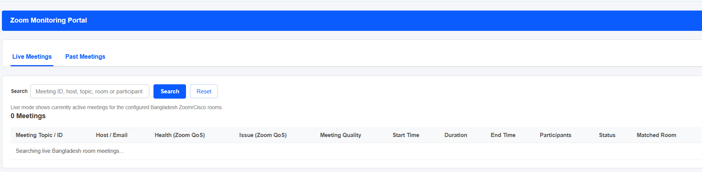

Project Overview
The Zoom Monitoring Portal is a custom, view-only web operations dashboard built on Google Apps Script to monitor live and historical Zoom meetings for designated regional conference rooms. Its primary purpose is to enable IT and AV support teams to proactively track audio, video, and network telemetry for Zoom Rooms and Cisco (H.323/SIP) endpoints without granting global administrative privileges.
Business Problem
The native Zoom Admin Dashboard operates strictly at a global organizational level and lacks granular access controls to restrict visibility to specific regions, countries, or room subsets. As a result, regional support teams lacked a scoped, read-only interface to proactively monitor crucial local meetings and detect quality degradation before participants experienced disruptions.
Solution Implemented
A serverless web application was implemented using Google Apps Script as a backend API controller and a custom HTML/CSS/JavaScript frontend. The backend authenticates via Zoom Server-to-Server OAuth using strictly read-only Dashboard scopes, filters active and past meetings against target room identifiers stored in Script Properties, and serves real-time Quality of Service (QoS) diagnostics to the UI.
Key Features
- Live & Past Meeting Tabs: Provides dedicated views to monitor currently active sessions as well as historical meetings within a selectable 31-day date and time range.
- Scoped Regional Endpoint Matching: Automatically filters organizational meetings to display only sessions involving configured Zoom Rooms and Cisco (H.323/SIP) hardware endpoints.
- Proactive QoS Health & Alerting: Aggregates participant QoS telemetry to classify meeting health (Good, Warning, Critical) and translates Zoom issue codes into clear network, audio, video, or CPU alerts.
- Direct Meeting ID Lookup: Supports instant 9–11 digit Meeting ID queries to retrieve live or recently ended meeting telemetry directly, including fallback handling for Zoom API processing delays.
- Participant-Level Diagnostic Drill-Down: Displays granular participant metrics including join/leave times, client versions, network types, and audio/video/screen-share quality while omitting sensitive hardware camera model identifiers.
- Hardened Read-Only Security: Enforces strict read-only API scopes, caches OAuth access tokens via CacheService, stores target room configurations in Script Properties, and applies HTML escaping and X-Frame-Options protections.
My Role & Contribution
Led requirement analysis, solution architecture, security hardening, and deployment preparation for the regional monitoring portal, utilizing AI-assisted workflows for code refactoring and vulnerability remediation. Conducted security reviews to eliminate hardcoded room identifiers, restrict hardware model exposure, validate read-only Zoom OAuth scopes, and prepare compliance documentation for technical stakeholders.
Workflow
- 1. User Input & Mode Selection: The support engineer opens the web portal, selects either Live or Past Meetings mode, and optionally enters a Meeting ID, room name, host, or date range.
- 2. OAuth Authentication: The Google Apps Script backend retrieves a cached Server-to-Server OAuth Bearer token from CacheService or requests a new token using credentials stored in Script Properties.
- 3. API Query & Endpoint Matching: The script queries Zoom Metrics endpoints and matches participant names and emails against the configured Zoom Room and Cisco room lists stored in Script Properties.
- 4. QoS Telemetry Aggregation: For matched meetings, the backend inspects participant QoS metrics to determine overall meeting health status and format human-readable network or audio/video issue alerts.
- 5. Dashboard Rendering & Drill-Down: Normalized meeting records are rendered in the frontend table with HTML sanitization, allowing users to click any row to inspect participant-level QoS details.
Challenges & Solutions
- Key technical challenges included preventing OAuth rate-limiting, eliminating hardcoded room names, handling Zoom API propagation delays for recently ended meetings, and aligning health indicators with Zoom Dashboard alerts. These were resolved by caching tokens for 55 minutes, migrating room lists to Script Properties, adding fallback queries to standard past-meeting endpoints, and replacing inaccurate audio flags with participant QoS issue aggregation.
Business Benefits
- The portal enables regional IT/AV support teams to proactively identify and troubleshoot meeting quality issues before users escalate incidents, significantly reducing manual search effort in the global Zoom console. Additionally, its strict read-only scope design and view-only interface enforce least-privilege access control while safeguarding meeting administration settings.
Project Summary
Project screenshots
Screenshots supplied with the case-study document. Review all visuals for confidentiality before public release.
